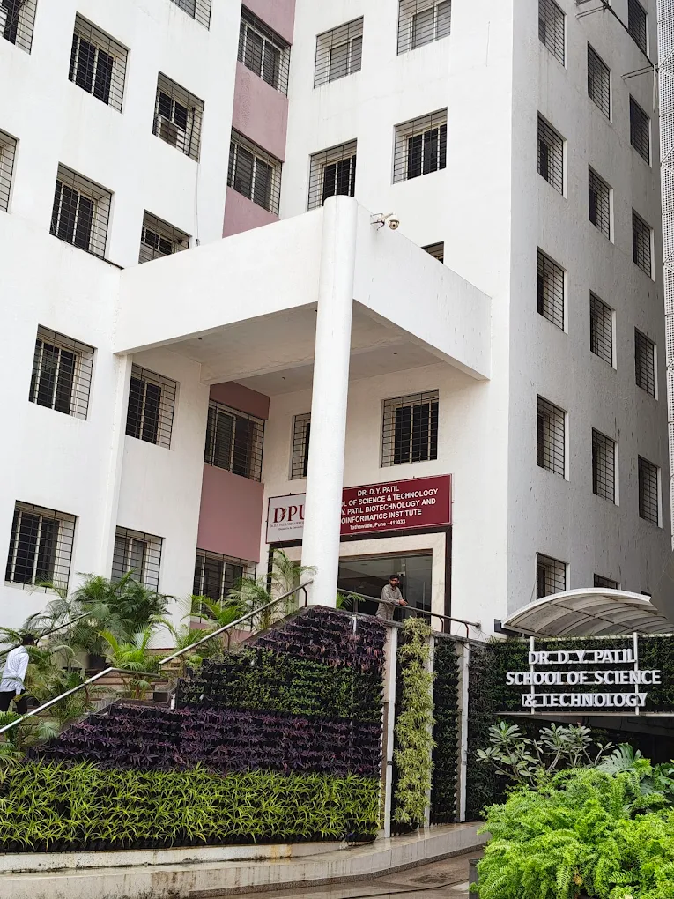

Dr. D. Y. Patil School of Science and Technology is an educational institution located in Tathawade, Pune. It provides education in engineering and technology. The college encourages students to develop technical knowledge and practical skills.
